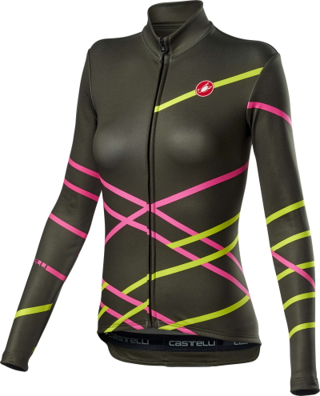

Castelli Diagonal FZ Fietsshirt Lange Mouwen Donkergroen-Roze-Geel Dames
Het Castelli Diagonal FZ fietsshirt voor dames is het ideale jack voor wie gesoigneerd het voor- en najaar door wilt komen.
Dit fietsjack komt het beste tot zijn recht wanneer het droog is buiten bij een temperatuur tussen de 10 en 18 graden. Doordat dit fietsjack niet winddicht is en geen waterafstotende laag heeft blijft het ademend vermogen optimaal waardoor je niet snel oververhit raakt. Ideaal om te gebruiken in het voor- en najaar wanneer de dagen fris aan voelen.
€ 110